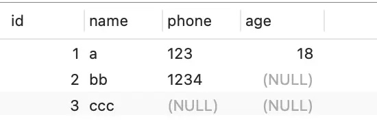

MySQL的数据存放
MySQL的数据是保存在磁盘的，但是具体保存在那个文件？
MySQL的存储引擎很多，不同的储存引擎保存的文件自然不同，我们主要讨论InnoDB引擎。
InnoDB是常用的存储引擎，也是MySQL的默认存储引擎。

通过这条命令可以看出，每创建一个database，都会在/var/lib/mysql目录里面创建一个以database为名的目录，然后保存表结构和表数据。
每个database目录里面都有些什么文件？
可以看到有三种类型的文件
- db.opt，用来存储当前数据库的默认字符集和字符校验规则。
- t_order.frm ，t_order 的表结构会保存在这个文件。在 MySQL 中建立一张表都会生成一个.frm 文件，该文件是用来保存每个表的元数据信息的，主要包含表结构定义。
- t_order.ibd，t_order 的表数据会保存在这个文件。表数据既可以存在共享表空间文件（文件名：ibdata1）里，也可以存放在独占表空间文件（文件名：表名字.ibd）。这个行为是由参数 innodb_file_per_table 控制的，若设置了参数 innodb_file_per_table 为 1，则会将存储的数据、索引等信息单独存储在一个独占表空间，从 MySQL 5.6.6 版本开始，它的默认值就是 1 了，因此从这个版本之后， MySQL 中每一张表的数据都存放在一个独立的 .ibd 文件。
表空间文件的结构是怎么样的？
表空间由段（segment）、区（extent）、页（page）、行（row）组成，InnoDB存储引擎的逻辑存储结构大致如下图：

- 行（row）数据库表中的记录都是按行（row）进行存放的，每行记录根据不同的行格式，有不同的存储结构。
- 页（page）记录是按照行来存储的，但是数据库的读取并不以「行」为单位，否则一次读取（也就是一次 I/O 操作）只能处理一行数据，效率会非常低。
因此，InnoDB 的数据是按「页」为单位来读写的，也就是说，当需要读一条记录的时候，并不是将这个行记录从磁盘读出来，而是以页为单位，将其整体读入内存。
默认每个页的大小为 16KB，也就是最多能保证 16KB 的连续存储空间。
页是 InnoDB 存储引擎磁盘管理的最小单元，意味着数据库每次读写都是以 16KB 为单位的，一次最少从磁盘中读取 16K 的内容到内存中，一次最少把内存中的 16K 内容刷新到磁盘中。
页的类型有很多，常见的有数据页、undo 日志页、溢出页等等。数据表中的行记录是用「数据页」来管理的，总之知道表中的记录存储在「数据页」里面就行。 - 区（extent）
- 我们知道 InnoDB 存储引擎是用 B+ 树来组织数据的。
- B+ 树中每一层都是通过双向链表连接起来的，如果是以页为单位来分配存储空间，那么链表中相邻的两个页之间的物理位置并不是连续的，可能离得非常远，那么磁盘查询时就会有大量的随机I/O，随机 I/O 是非常慢的。
- 解决这个问题也很简单，就是让链表中相邻的页的物理位置也相邻，这样就可以使用顺序 I/O 了，那么在范围查询（扫描叶子节点）的时候性能就会很高。
那具体怎么解决呢？
在表中数据量大的时候，为某个索引分配空间的时候就不再按照页为单位分配了，而是按照区（extent）为单位分配。每个区的大小为 1MB，对于 16KB 的页来说，连续的 64 个页会被划为一个区，这样就使得链表中相邻的页的物理位置也相邻，就能使用顺序 I/O 了。
- 段（segment）
表空间是由各个段（segment）组成的，段是由多个区（extent）组成的。段一般分为数据段、索引段和回滚段等。- 索引段：存放 B + 树的非叶子节点的区的集合；
- 数据段：存放 B + 树的叶子节点的区的集合；
- 回滚段：存放的是回滚数据的区的集合，之前讲事务隔离 (opens new window)的时候就介绍到了 MVCC 利用了回滚段实现了多版本查询数据。
为什么要讲刚才那些，有什么用啊，你工作又用不到。。。。。。
主要是想让大家知道行记录是存储在哪个文件，以及行记录在这个表空间文件中的哪个区域，有一个从上往下切入的视角，这样理解起来不会觉得很抽象。
InnoDB 行格式有哪些？
行格式（row_format），就是一条记录的存储结构。
行格式(row_format)有哪些？
- Redundant
MySQL5.0版本之前用的行格式，现在已经没人用了 - Compact
MySQL5.0之后引入的行记录存储方式,是一种紧凑的行格式，为了一个数据页中可以存放更多的记录。MySQL5.1之后的默认行格式 - Dynamic
- Compressed
以上两种事Compact的改良版，都是紧凑的行格式，MySQL5.7之后，默认使用Dynamic
COMPACT 行格式长什么样？

记录的额外信息
记录的额外信息包含 3 个部分：变长字段长度列表、NULL 值列表、记录头信息。
变长字段长度列表
char(n)长度固定，varchar(n)长度不固定，变长字段实际存储的数据长度或者大小是不固定的。
变长字段的真实数据占用的字节数会按照列的顺序逆序存放
在存储数据的时候，也要把数据占用的大小存起来，存到「变长字段长度列表」里面，读取数据的时候才能根据这个「变长字段长度列表」去读取对应长度的数据。其他 TEXT、BLOB 等变长字段也是这么实现的。
为了展示「变长字段长度列表」具体是怎么保存「变长字段的真实数据占用的字节数」，我们先创建这样一张表，字符集是 ascii（所以每一个字符占用的 1 字节），行格式是 Compact，t_user 表中 name 和 phone 字段都是变长字段：
1 | CREATE TABLE `t_user` ( |

接下来，我们看看看看这三条记录的行格式中的 「变长字段长度列表」是怎样存储的。
先来看第一条记录：
name 列的值为 a，真实数据占用的字节数是 1 字节，十六进制 0x01；
phone 列的值为 123，真实数据占用的字节数是 3 字节，十六进制 0x03；
age 列和 id 列不是变长字段，所以这里不用管。
这些变长字段的真实数据占用的字节数会按照列的顺序逆序存放（等下会说为什么要这么设计），所以「变长字段长度列表」里的内容是「 03 01」，而不是 「01 03」。

同样的道理，我们也可以得出第二条记录的行格式中，「变长字段长度列表」里的内容是「 04 02」，如下图：
第三条记录中 phone 列的值是 NULL，NULL 是不会存放在行格式中记录的真实数据部分里的，所以「变长字段长度列表」里不需要保存值为 NULL 的变长字段的长度。
为什么「变长字段长度列表」的信息要按照逆序存放？
这个设计是有想法的，主要是因为「记录头信息」中指向下一个记录的指针，指向的是下一条记录的「记录头信息」和「真实数据」之间的位置，这样的好处是向左读就是记录头信息，向右读就是真实数据，比较方便。
「变长字段长度列表」中的信息之所以要逆序存放，是因为这样可以使得位置靠前的记录的真实数据和数据对应的字段长度信息可以同时在一个 CPU Cache Line 中，这样就可以提高 CPU Cache 的命中率。
同样的道理， NULL 值列表的信息也需要逆序存放。
每个数据库表的行格式都有「变长字段字节数列表」吗？
其实变长字段字节数列表不是必须的。
当数据表没有变长字段的时候，比如全部都是 int 类型的字段，这时候表里的行格式就不会有「变长字段长度列表」了，因为没必要，不如去掉以节省空间。
所以「变长字段长度列表」只出现在数据表有变长字段的时候。
NULL 值列表
表中的某些列可能会存储 NULL 值，如果把这些 NULL 值都放到记录的真实数据中会比较浪费空间，所以 Compact 行格式把这些值为 NULL 的列存储到 NULL值列表中。
如果存在允许 NULL 值的列，则每个列对应一个二进制位（bit），二进制位按照列的顺序逆序排列。
- 二进制位的值为1时，代表该列的值为NULL。
- 二进制位的值为0时，代表该列的值不为NULL。
另外，NULL 值列表必须用整数个字节的位表示（1字节8位），如果使用的二进制位个数不足整数个字节，则在字节的高位补 0。
还是以 t_user 表的这三条记录作为例子：
第一条记录，第一条记录所有列都有值，不存在 NULL 值，但是 InnoDB 是用整数字节的二进制位来表示 NULL 值列表的，现在不足 8 位，所以要在高位补 0，最终用二进制来表示如图，NULL 值列表用十六进制表示是 0x00。
第二条记录，第二条记录 age 列是 NULL 值，所以，对于第二条数据，NULL值列表用十六进制表示是 0x04。
第三条记录，第三条记录 phone 列 和 age 列是 NULL 值，所以，对于第三条数据，NULL 值列表用十六进制表示是 0x06。
把三条记录的 NULL 值列表都填充完毕后，它们的行格式是这样的：
每个数据库表的行格式都有「NULL 值列表」吗？
NULL 值列表也不是必须的。
当数据表的字段都定义成 NOT NULL 的时候，这时候表里的行格式就不会有 NULL 值列表了。
所以在设计数据库表的时候，通常都是建议将字段设置为 NOT NULL，这样可以至少节省 1 字节的空间（NULL 值列表至少占用 1 字节空间）。
「NULL 值列表」是固定 1 字节空间吗？如果这样的话，一条记录有 9 个字段值都是 NULL，这时候怎么表示？
「NULL 值列表」的空间不是固定 1 字节的。
当一条记录有 9 个字段值都是 NULL，那么就会创建 2 字节空间的「NULL 值列表」，以此类推。
记录头信息
记录头信息中包含的内容很多，我就不一一列举了，这里说几个比较重要的：
- delete_mask ：标识此条数据是否被删除。从这里可以知道，我们执行 detele 删除记录的时候，并不会真正的删除记录，只是将这个记录的 delete_mask 标记为 1。
- next_record：下一条记录的位置。从这里可以知道，记录与记录之间是通过链表组织的。在前面我也提到了，指向的是下一条记录的「记录头信息」和「真实数据」之间的位置，这样的好处是向左读就是记录头信息，向右读就是真实数据，比较方便。
- record_type：表示当前记录的类型，0表示普通记录，1表示B+树非叶子节点记录，2表示最小记录，3表示最大记录
记录的真实数据
记录真实数据部分除了我们定义的字段，还有三个隐藏字段，分别为：row_id、trx_id、roll_pointer，我们来看下这三个字段是什么。

- Row_id
如果我们建表的时候指定了主键或者唯一约束列，那么就没有 row_id 隐藏字段了。如果既没有指定主键，又没有唯一约束，那么 InnoDB 就会为记录添加 row_id 隐藏字段。row_id不是必需的，占用 6 个字节。 - Trx_id
事务id，表示这个数据是由哪个事务生成的。 trx_id是必需的，占用 6 个字节。 - Roll_pointer
这条记录上一个版本的指针。roll_pointer 是必需的，占用 7 个字节。
varchar(n) 中 n 最大取值为多少？
MySQL 规定除了 TEXT、BLOBs 这种大对象类型之外，其他所有的列（不包括隐藏列和记录头信息）占用的字节长度加起来不能超过 65535 个字节。
那么，varchar(n) 中 n 最大取值为多少？
定义一个 varchar(65535) 类型的字段，字符集为 ascii 的数据库表。
1 | mysql> CREATE TABLE test ( |
从报错信息就可以知道一行数据的最大字节数是 65535（不包含 TEXT、BLOBs 这种大对象类型），其中包含了 storage overhead。
storage overhead 其实就是「变长字段长度列表」和 「NULL 值列表」，也就是说一行数据的最大字节数 65535，其实是包含「变长字段长度列表」和 「NULL 值列表」所占用的字节数的。所以， 我们在算 varchar(n) 中 n 最大值时，需要减去 storage overhead 占用的字节数。
这是因为我们存储字段类型为 varchar(n) 的数据时，其实分成了三个部分来存储：
- 真实数据
- 真实数据占用的字节数
- NULL 标识，如果不允许为NULL，这部分不需要
字段是允许为 NULL 的，所以会用 1 字节来表示「NULL 值列表」。
「变长字段长度列表」所占用的字节数 = 所有「变长字段长度」占用的字节数之和。
所以，我们要先知道每个变长字段的「变长字段长度」需要用多少字节表示？具体情况分为：
- 条件一：如果变长字段允许存储的最大字节数小于等于 255 字节，就会用 1 字节表示「变长字段长度」；
- 条件二：如果变长字段允许存储的最大字节数大于 255 字节，就会用 2 字节表示「变长字段长度」；
这里字段类型是 varchar(65535) ，字符集是 ascii，所以代表着变长字段允许存储的最大字节数是 65535，符合条件二，所以会用 2 字节来表示「变长字段长度」。
因为这个案例是只有 1 个变长字段，所以「变长字段长度列表」= 1 个「变长字段长度」占用的字节数，也就是 2 字节。
因为我们在算 varchar(n) 中 n 最大值时，需要减去 「变长字段长度列表」和 「NULL 值列表」所占用的字节数的。所以，在数据库表只有一个 varchar(n) 字段且字符集是 ascii 的情况下，varchar(n) 中 n 最大值 = 65535 - 2 - 1 = 65532。
这个例子是针对字符集为 ascii 情况，如果采用的是 UTF-8，varchar(n) 最多能存储的数据计算方式就不一样了：
在 UTF-8 字符集下，一个字符最多需要三个字节，varchar(n) 的 n 最大取值就是 65532/3 = 21844。
上面所说的只是针对于一个字段的计算方式。
行溢出后，MySQL 是怎么处理的？
MySQL 中磁盘和内存交互的基本单位是页，一个页的大小一般是 16KB，也就是 16384字节，而一个 varchar(n) 类型的列最多可以存储 65532字节，一些大对象如 TEXT、BLOB 可能存储更多的数据，这时一个页可能就存不了一条记录。这个时候就会发生行溢出，多的数据就会存到另外的「溢出页」中。
如果一个数据页存不了一条记录，InnoDB 存储引擎会自动将溢出的数据存放到「溢出页」中。在一般情况下，InnoDB 的数据都是存放在 「数据页」中。但是当发生行溢出时，溢出的数据会存放到「溢出页」中。
当发生行溢出时，在记录的真实数据处只会保存该列的一部分数据，而把剩余的数据放在「溢出页」中，然后真实数据处用 20 字节存储指向溢出页的地址，从而可以找到剩余数据所在的页。
这个是 Compact 行格式在发生行溢出后的处理。
Compressed 和 Dynamic 这两个行格式和 Compact 非常类似，主要的区别在于处理行溢出数据时有些区别。
这两种格式采用完全的行溢出方式，记录的真实数据处不会存储该列的一部分数据，只存储 20 个字节的指针来指向溢出页。而实际的数据都存储在溢出页中，看起来就像下面这样：
总结
MySQL 的 NULL 值是怎么存放的？
MySQL 的 Compact 行格式中会用「NULL值列表」来标记值为 NULL 的列，NULL 值并不会存储在行格式中的真实数据部分。
MySQL的Null值会占空间么？
NULL值列表会占用 1 字节空间，当表中所有字段都定义成 NOT NULL，行格式中就不会有 NULL值列表，这样可节省 1 字节的空间。
MySQL 怎么知道 varchar(n) 实际占用数据的大小？
MySQL 的 Compact 行格式中会用「变长字段长度列表」存储变长字段实际占用的数据大小。
行溢出后，MySQL 是怎么处理的？
如果一个数据页存不了一条记录，InnoDB 存储引擎会自动将溢出的数据存放到「溢出页」中。
Compact 行格式针对行溢出的处理是这样的：当发生行溢出时，在记录的真实数据处只会保存该列的一部分数据，而把剩余的数据放在「溢出页」中，然后真实数据处用 20 字节存储指向溢出页的地址，从而可以找到剩余数据所在的页。
Compressed 和 Dynamic 这两种格式采用完全的行溢出方式，记录的真实数据处不会存储该列的一部分数据，只存储 20 个字节的指针来指向溢出页。而实际的数据都存储在溢出页中。